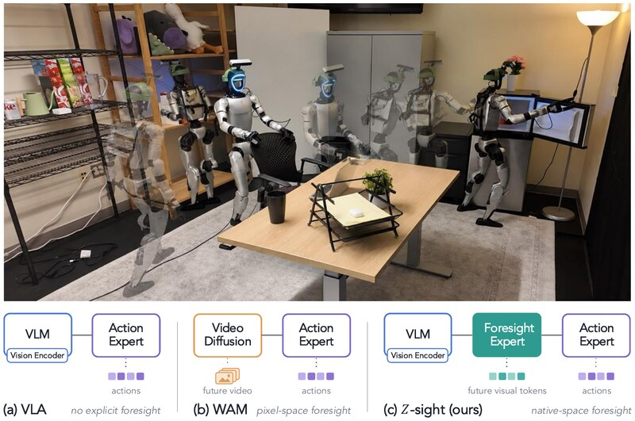
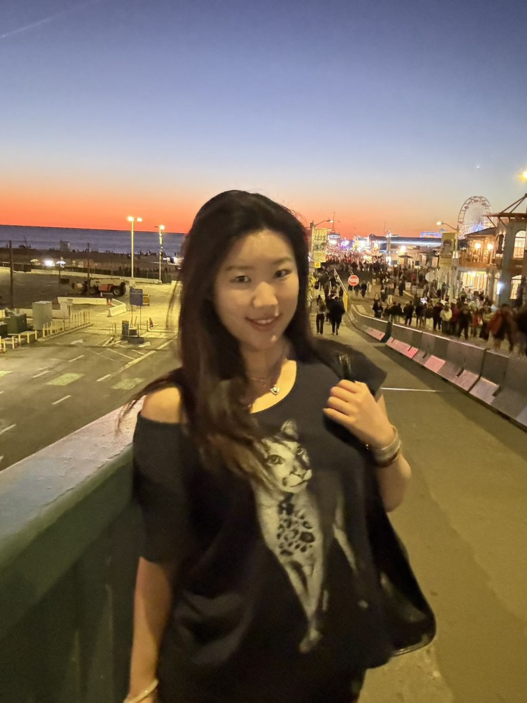

Celina (Shiyu) Wang
Major in Applied and Computational Mathematics
Minor in Physics · Minor in Computer Science
University of Southern California
I am a senior undergraduate student at USC working on robot learning and formal methods. I collaborate with Prof. Jyotirmoy (Jyo) Deshmukh in the CPS-VIDA Lab and Prof. Yue Wang in the Physical Superintelligence (PSI) Lab.
My research interests include robot learning, cyber-physical systems, formal methods, and multi-robot systems.
Publications
Logic-VLA: A Temporal Logic Conditioned Vision-Language-Action Model
Best Poster Presentation Award, IROS 2026 Workshop on Learning and Formal Methods for Robotics (LAFR)
Oral, IROS 2026 Workshop on Embodied Neuro-Symbolic AI for Reliable and Safe Robotics
* equal contribution · † equal advising
Service
- Reviewer, IEEE International Conference on Robotics and Automation (ICRA) 2027
- Reviewer, IROS 2026 Workshop on Learning and Formal Methods for Robotics (LAFR)
Beyond the Lab
Stargazing has always been a source of wonder for me, and it is where my curiosity about the universe began. Outside the lab I am an astrophotographer: I carry a telescope out to dark skies and spend whole nights imaging nebulae and star clusters thousands of light-years away.